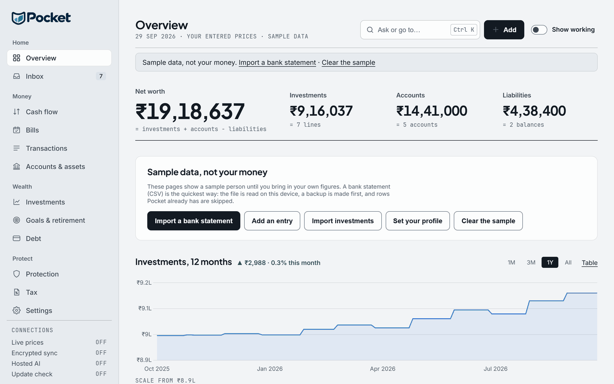

Pocket, free, on your own device.
One install, with no account and no sign-in. Your figures stay in a folder on your computer or phone, and nothing leaves it unless you turn something on.
Windows, macOS, Linux and Android · Pocket 3.2.10 · What changed in 3.2.10
SHA-256

Every platform
SHA-256 c66cb5cb105b8b3120e9bd2fdfc52e2ae7998d37b0f938b0416bd48ed6696447
SHA-256 fb3f931aa96aa59a404601a08a1b3e9e7a60dc0f45277ef2ff143601010e38f5
SHA-256 0895e5f7724d4407a918e42a865031ce894872dbadcb665e1606ac28e60494a4
SHA-256 319a56d414e3ddc58f30a251ac9a2fc2b4c25b1d5d3b461a6feba6a18796340b
Prefer nothing installed? The portable zip is under Alternative downloads.
Your first 5 minutes
In the order Pocket shows it. No account, nothing sent.
It opens on a sample person
Six months of a made-up person's income, spending, accounts, debts, bills, goals, payslip and investments, so every page has something to show. Every page says "Sample data, not your money", and nothing of yours is written.
Import a bank statement
The first button on the start card. Choose your bank (HDFC, ICICI, SBI, Axis or Kotak, or any bank) and the statement's CSV; dates are read as banks write them. When the file has a balance, Pocket offers its last balance as your bank account, and adds nothing until you say so.
Your first entry ends the sample
The sample shows only while Pocket holds nothing of yours. From your first entry, account, debt, goal or bill, every figure is yours.
Add your mutual funds
The detailed statement (CAS) that CAMS or KFintech emails you, with its password, which is never stored. Pocket shows what adds up before it writes anything, and makes a backup first.
Open a figure's working
Show working lists every entry, price and date behind net worth and the other headline figures, and adds them up. The net worth guide walks through one.
Check the file, then install it
What changed in 3.2.10, or follow every release in the release feed (RSS).
Verify: the size and SHA-256 of every file
- Version
- v3.2.10 · released 12 October 2026
- Windows
- Pocket_3.2.10_windows_setup.exe · 49 MB (installer) · Windows 10/11, 64-bit (x64)
SHA-256c66cb5cb105b8b3120e9bd2fdfc52e2ae7998d37b0f938b0416bd48ed6696447 - macOS
- Pocket_3.2.10_macos.dmg · 61 MB (disk image) · Apple silicon (M1 or later)
SHA-256fb3f931aa96aa59a404601a08a1b3e9e7a60dc0f45277ef2ff143601010e38f5 - Linux
- Pocket_3.2.10_linux_amd64.deb · 69 MB · 64-bit x86 (amd64)
SHA-2560895e5f7724d4407a918e42a865031ce894872dbadcb665e1606ac28e60494a4 - Android
- Pocket_3.2.10_android.apk · 74 MB (APK) · Android 7.0 or later
SHA-256319a56d414e3ddc58f30a251ac9a2fc2b4c25b1d5d3b461a6feba6a18796340b
- Not yet code-signed. Windows SmartScreen may warn on the first run ("More info", then "Run anyway"), and macOS asks once before it opens Pocket. Download Pocket only from this page, and check the file against its SHA-256 above before you run it.
- Update check, from 3.2.7. Pocket can tell you when a newer version is out: when you choose Check now (Settings, Privacy & security), or once a day if you turn that on. It asks mypocketfi.com for the latest version number and sends nothing about you; it is off until you ask. See the Privacy Policy.
Install help: Windows, Mac, Linux and Android
- Download the installer from this page: no payment, no form, no account.
- Check it is the file this page describes: in PowerShell,
Get-FileHash .\Pocket_3.2.10_windows_setup.exeshould print the SHA-256 above. - Run it. It installs Pocket for you alone, with no administrator prompt, puts Pocket in the Start menu and on the desktop, and opens it in a window of its own. Your 14-day full trial starts on first run, then the Free plan continues forever.
- Data lives in
%USERPROFILE%\FinOSData— back up that folder and you have everything. Uninstall from Settings → Apps; your data folder is kept. - Each new release is published here with its release notes; its installer updates Pocket in place. Back up before updating.
On a Mac: open the disk image and drag Pocket to Applications. Pocket is not yet notarised by Apple, so macOS blocks the first open: on macOS 15 or later, click Done, then open System Settings → Privacy & Security and click Open Anyway; on macOS 14 or earlier, Control-click Pocket.app and choose Open. Data lives in ~/FinOSData.
On Linux: on Debian or Ubuntu, sudo apt install ./Pocket_3.2.10_linux_amd64.deb, then open Pocket from your applications menu; on another distribution, run the AppImage under Alternative downloads. Pocket runs in a terminal window: leave it open while you use Pocket. Data lives in ~/FinOSData.
On an Android phone: download the APK and open it. The first time, Android asks you to allow your browser to install apps (you can switch that off again in Settings). Pocket keeps its data on the phone, encrypted, and asks for no internet access. To update, install the next release's APK over it; your data is kept.
Alternative downloads
The same Pocket, packaged another way, each with its size and SHA-256 once published.
- Windows portable zip
- Pocket_3.2.10_windows.zip · 66 MB · ~141 MB unpacked. The Windows build as a folder: unzip it anywhere and run Pocket.exe. Nothing is installed; deleting the folder removes it.
SHA-256c9f2fa03625dbb8610afcb517ee5311f8e99a778c56e1b8c8cd0b1cf9aa40617 - Linux AppImage
- Pocket_3.2.10_linux_x86_64.AppImage · 86 MB. One file that runs on most 64-bit Linux distributions: make it executable and run it.
SHA-256877ee74ca77d51db1eab462ba85a69ff76e6ac479573cfa3836696c2321fca08 - Linux tar.gz
- Pocket_3.2.10_linux.tar.gz · 93 MB · ~232 MB unpacked. The Linux build as a plain archive: extract it and run Pocket/Pocket.
SHA-256c660c1fc9a526c0bb3b2df99c82bca85a909a917433e5a10ba90e5c4fcbed66d - Android APK
- Pocket_3.2.10_android.apk · 74 MB. The Android app as a file you install yourself, without Google Play.
SHA-256319a56d414e3ddc58f30a251ac9a2fc2b4c25b1d5d3b461a6feba6a18796340b
System requirements
Windows, macOS, Linux and Android today; the iPhone app's come with its App Store listing. Known limits are on the Changelog.
- Windows
- Windows 10/11 (64-bit, x64) · 4 GB RAM or more · ~250 MB free space
- macOS
- An Apple silicon Mac (M1 or later). Not yet notarised by Apple, so the first open needs one confirmation; GETTING_STARTED.txt in the disk image shows how.
- Linux
- 64-bit x86 (amd64) with glibc 2.38 or later (Ubuntu 24.04, Debian 13 or newer).
- Android
- Android 7.0 or later. The APK installs directly; Google Play is coming.
- iOS Coming to the App Store
- Requirements will be published at release.
Questions before you install?
The known issues, and support by email from the founder, are on the Support page.
Download for Windows Choose your download